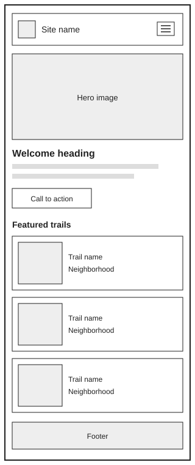
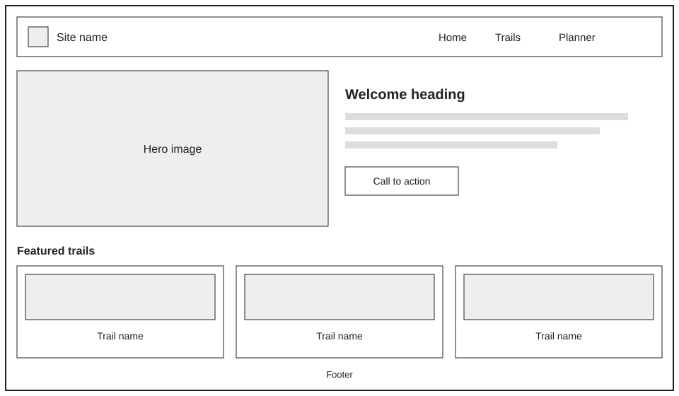

Site Name
Minneapolis Lake and Trail Guide
This name says the city and the two things a visitor can find here: a lake path or a trail. It is specific enough that the site is not confused with a statewide park system, and it is plain enough to remember. A possible domain is mplslaketrails.org.
Site Purpose
The site helps students and neighbors in Minneapolis choose a nearby place to walk, run, or ride. The home page explains how to use the guide and highlights a few trails. The trails page lists places with the name, neighborhood, distance, and a short description. The planner page lets a visitor save favorite places and send a suggestion through a form.
Scenarios
These questions come from a student or neighbor looking for a place to be outside in the city.
- What is a short lake loop I can walk after class?
- Which trails are paved and open for a bike ride?
- How do I save a favorite trail and send a suggestion?
Color Scheme
The palette comes from lake water, shoreline trees, and the paper of a field notebook. Each color below is used on this page.
-
Deep Lake #0B3A4A
Header, footer, and headings.
-
Pine #1B5E45
Links, the accent bar, and focus outlines.
-
Sand #F6F1E7
Page background and text on the dark header and footer.
-
Ink #1C2421
Paragraphs, lists, and other body text.
-
White #FFFFFF
Content panels behind each section.
Typography
Two fonts are used. Libre Baskerville carries the headings. Source Sans 3 carries the reading text, including this paragraph.
-
Libre Baskerville
Used for the site name and for section headings.
-
Source Sans 3
Used for paragraphs, lists, captions, and labels.
Wireframe
These black and white sketches plan the home page only. They show structure for a small screen and a wide screen. Color, photographs, and final type come later.

